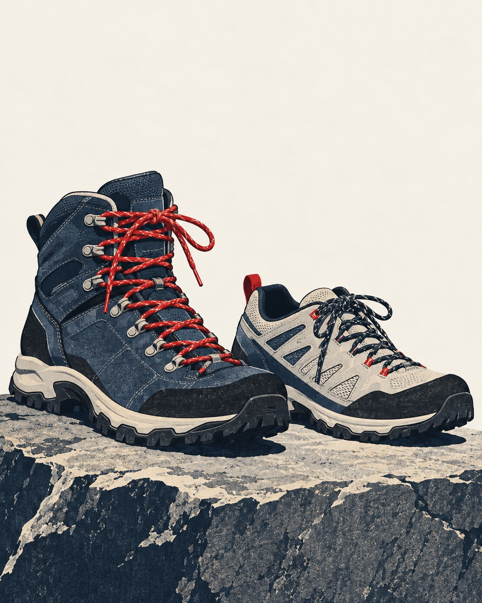

Bota e tênis de trilha não são hierarquia. São escolhas para terrenos, cargas e corpos diferentes.
Quando a bota ajuda
Bota costuma proteger mais contra torção, pedra, lama, frio e carga pesada. Pode fazer sentido em trilhas longas, terreno irregular, mochila carregada, chuva, neve leve ou rotas onde bater o pé em rocha é provável.
O custo é peso, calor e tempo de adaptação. Bota nova em trilha longa é convite para bolha.
Quando o tênis funciona melhor
Tênis de trilha é mais leve, seca mais rápido e cansa menos em rotas simples. Para hiking de um dia, trilha bem marcada e mochila leve, pode ser suficiente.
O limite aparece em lama profunda, pedra solta, frio, carga alta e tornozelo sem preparo.
Critério prático
- Experimente com a meia que vai usar.
- Deixe espaço para o pé inchar e descer sem bater a unha.
- Teste antes em caminhada curta.
- Priorize aderência do solado e conforto real, não aparência.
Fontes consultadas
Origem editorial: pauta da Elevação, publicada no Japão Relativo em 16 de agosto de 2026.